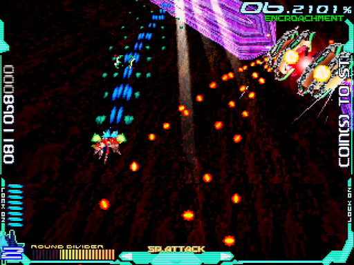
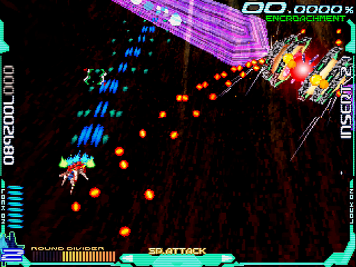

ランク調整パターン
どういうものか
本作にもゲームランクの概念が存在し、攻略本によると0～255＋MAX1の257段階となっています。
ランクを構成する(と考えられる)要素の、いくつかが以下です。見ると分かりますが、スコアとクリアランクは侵食率が密接に絡んでいます。
- 侵食率
- スコア
- ステージクリアランク
- ユーザーデータ
infinityに挑むなら、出現条件の関係である程度のランク上昇は避けられません。しかし、重要なのは3面クリア時の侵食率です。
普段は高い侵食率でランク上昇を抑え、必要になったら下げよう――これが、ランク調整パターンのキモです。
具体的には?
詳しくは各領域の解説をご覧いただきたいのですが、大雑把には以下のような流れです。
- 1面：ほとんどの敵を逃がし、侵食率が100%にならないよう気を付ける。クリア時に80%台を狙う。
- 2面：要所要所で倒し、それ以外は逃がす。クリア時に60%台を狙う。
- 3面：2つ目のチェックポイントを超えたら、全力で敵を倒しまくる。クリア時に20%台を狙う。
目安としては、誤差＋2%以内に抑えたいところ。下げすぎると配置タイプが上がって作戦が狂いますので、せめて高めに。
で、どうするのかというと逃がす敵・倒す敵を決めておくことです。
侵食率の説明から、大型機を1機倒せば一気に下がると見当が付きます。そういう敵は攻撃もやっかいな事が多いです。
であればそいつを倒し、他の小型機を逃がして帳尻を合わせよう・・・こんな感じで、パターンを作っていくと良いでしょう。
もちろん、時には崩れる事もあります。そんな時は、アドリブで補正しましょう。
- 大型機を逃がしたので、いつもより多めに小型機を倒す
- 小型機を倒しすぎたので、大型機を1機多く逃がす
どのくらい変わるの?
論より証拠、以下の画像をご覧下さい。1枚目が実施せず普通に攻めたケース、2枚目が実施したケースです。
弾数が減少しているのが分かると思います。これによって圧迫感が減り、より広いスペースで落ち着いて避けられるようになる訳です。
残念ながら、このパターンも万全ではありません。ランク調整パターンで1ミスなのにえらくキツキツという事もあります。他にも要素があるのかもしれません。
しかし、概して難易度を抑えられるのは確かです。気合いで避けるしかない! という状況を減らしたい場合、ぜひ試してみて下さい。
1. MAXは隠しコマンドを入れないと出ないので、普通のプレイで考慮する必要はありません ↩